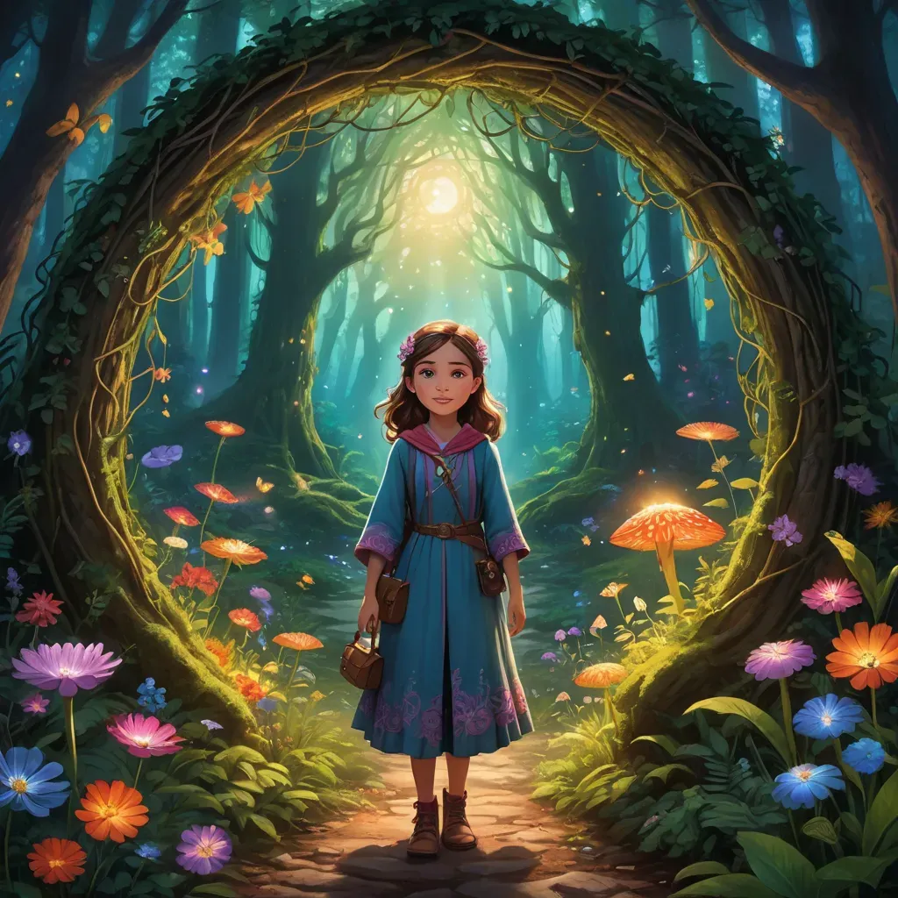
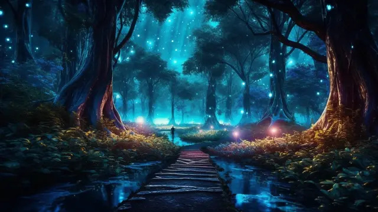
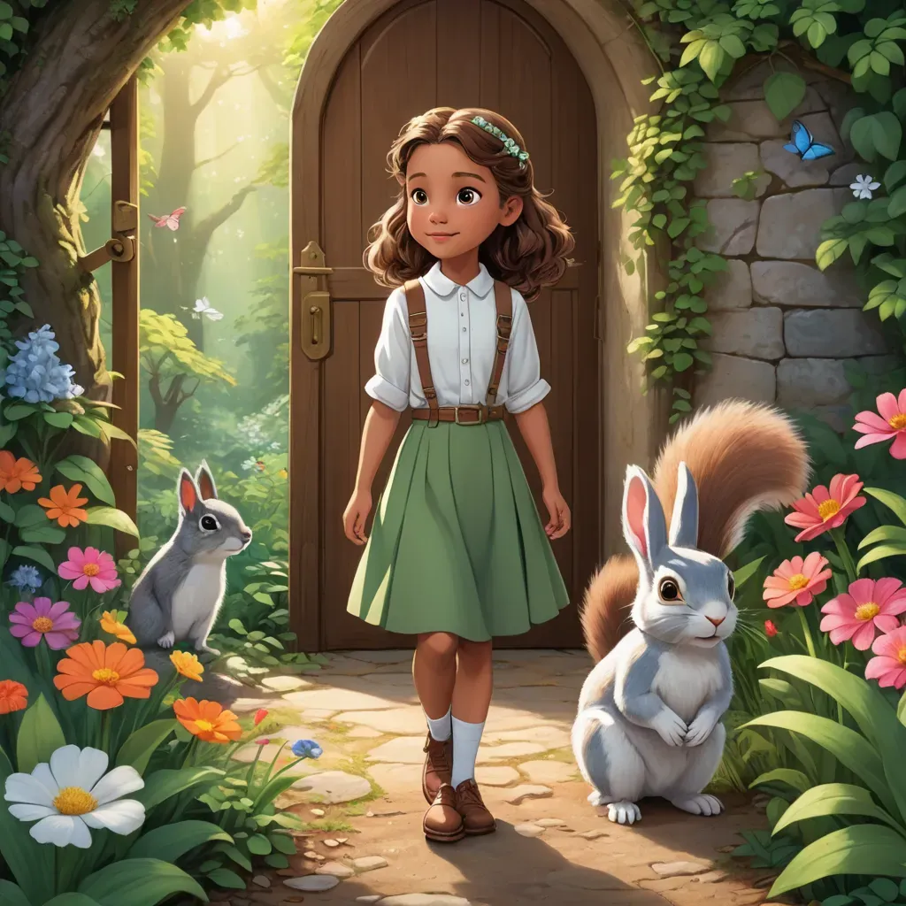
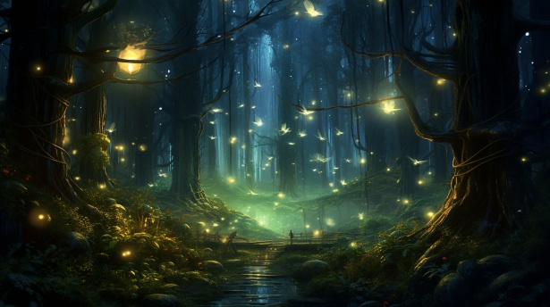
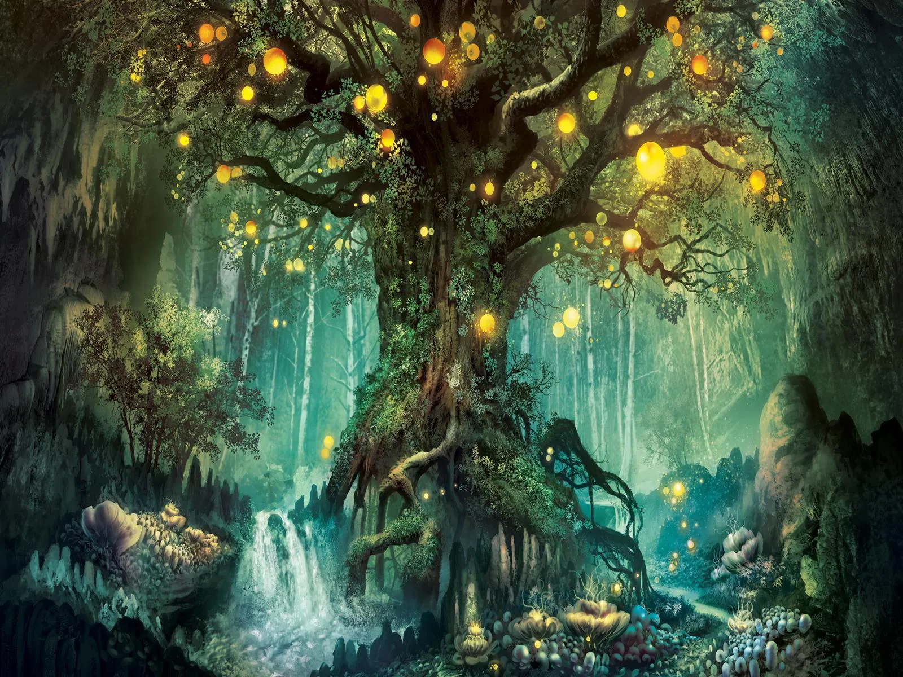

A Floresta Encantada: Perdida
Uma aventura misteriosa em uma floresta cheia de magia e segredos.
Capítulo 1: O Início da Jornada
Era uma manhã fria e silenciosa quando Clara, uma jovem curiosa e destemida, decidiu seguir o rumor sobre a Floresta Encantada. Dizia-se que quem adentrasse suas fronteiras jamais retornaria, mas Clara não se importava com os avisos.
Com sua mochila cheia de provisões, ela atravessou a entrada da floresta, que se parecia com uma parede de árvores altas e densas. O ar era mais fresco ali, e uma sensação de mistério tomava conta do ambiente.
Capítulo 2: O Mistério da Névoa
À medida que Clara se aventurava mais fundo na floresta, uma névoa espessa começou a cobrir o caminho. A cada passo, ela sentia que algo a observava. Sem saber para onde ir, decidiu seguir um som distante, como um canto suave e hipnotizante.
Enquanto caminhava, as árvores pareciam se mover, suas raízes se esticando como tentáculos. Clara começou a se perguntar se estava perdida ou se a floresta estava brincando com sua mente.
Capítulo 3: O Guardião da Floresta
Após horas de caminhada, Clara chegou a uma clareira iluminada por uma luz dourada. No centro, um imenso carvalho estava plantado. De repente, uma figura alta e esbelta apareceu diante dela, com os olhos brilhando como estrelas. Era o Guardião da Floresta, um ser misterioso com poderes de controlar a natureza.
O guardião falou com uma voz profunda e serena: "Você está perdida, jovem Clara. A Floresta Encantada a escolheu, mas agora você deve provar seu valor para encontrar o caminho de volta para casa".
Capítulo 4: O Desafio Final
Para sair da floresta, Clara precisaria completar três desafios: decifrar os enigmas da árvore milenar, atravessar o rio das sombras e enfrentar suas próprias dúvidas mais profundas. Determinada, ela aceitou o desafio do Guardião.
A cada etapa, Clara descobriu mais sobre sua coragem e força interior. Com a ajuda das criaturas da floresta e sua inteligência, ela conseguiu superar todos os obstáculos e, finalmente, encontrou a saída da floresta.
Epílogo: O Retorno
Clara retornou para casa, mas algo dentro dela havia mudado. Ela sabia que a Floresta Encantada não estava perdida para sempre, e que, um dia, ela retornaria para desvendar mais dos seus segredos.
Agora, Clara sabia que o maior mistério não estava nas árvores ou nas criaturas mágicas, mas em sua própria capacidade de enfrentar os desafios da vida e seguir em frente, mesmo quando o caminho parecia incerto.